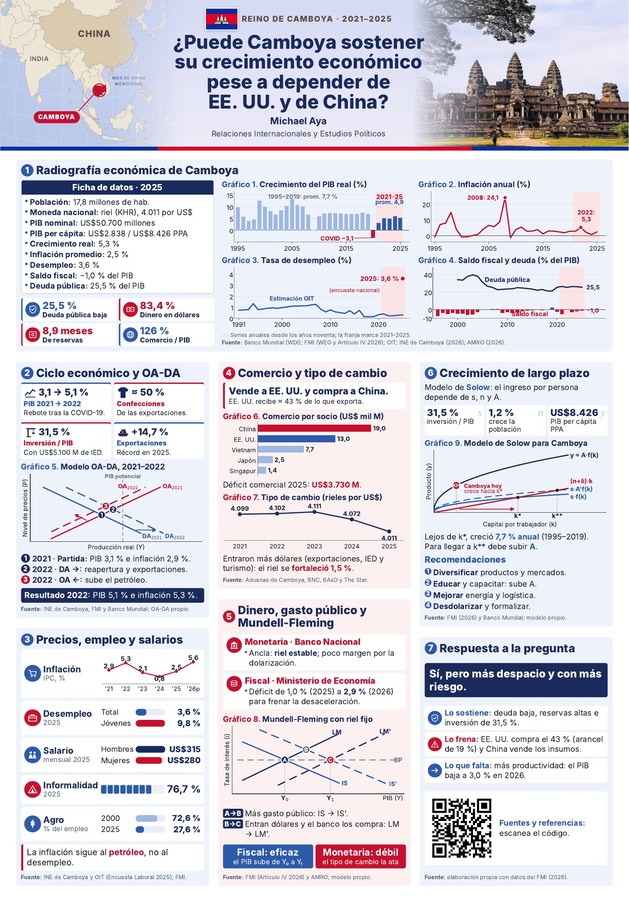

Michael Aya · Relaciones Internacionales y Estudios Políticos · Macroeconomía · Datos 2021–2025 (proyección 2026)

Póster académico individual de Macroeconomía: radiografía económica, ciclo y modelo OA-DA, precios y empleo, comercio y tipo de cambio, política monetaria y fiscal con Mundell-Fleming, crecimiento de largo plazo y respuesta a la pregunta.
Aquí están todas las fuentes de cada dato, gráfico e imagen, ordenadas según las siete secciones del póster.
Póster vertical 70 × 100 cm · series desde 1991, énfasis 2021–2025